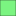

<!doctype html>
<html lang="en">
    <head>
        <meta charset="utf-8">
        <meta http-equiv="X-UA-Compatible" content="IE=edge">
        <meta name="viewport" content="initial-scale=1,user-scalable=no,maximum-scale=1,width=device-width">
        <meta name="mobile-web-app-capable" content="yes">
        <meta name="apple-mobile-web-app-capable" content="yes">
        <link rel="stylesheet" href="css/leaflet.css">
        <link rel="stylesheet" href="css/qgis2web.css"><link rel="stylesheet" href="css/fontawesome-all.min.css">
        <link rel="stylesheet" href="css/leaflet-measure.css">
        <style>
        html, body, #map {
            width: 100%;
            height: 100%;
            padding: 0;
            margin: 0;
        }
        </style>
        <title></title>
    </head>
    <body>
        <div id="map">
        </div>
        <script src="js/qgis2web_expressions.js"></script>
        <script src="js/leaflet.js"></script>
        <script src="js/leaflet.rotatedMarker.js"></script>
        <script src="js/leaflet.pattern.js"></script>
        <script src="js/leaflet-hash.js"></script>
        <script src="js/Autolinker.min.js"></script>
        <script src="js/rbush.min.js"></script>
        <script src="js/labelgun.min.js"></script>
        <script src="js/labels.js"></script>
        <script src="js/leaflet-measure.js"></script>
        <script src="data/Voirie_1.js"></script>
        <script src="data/BD_0404_2.js"></script>
        <script>
        var map = L.map('map', {
            zoomControl:true, maxZoom:27, minZoom:16
        }).fitBounds([[31.925224155407914,-7.953014215493335],[31.939694260139856,-7.923326014947966]]);
        var hash = new L.Hash(map);
        map.attributionControl.setPrefix('<a href="https://github.com/tomchadwin/qgis2web" target="_blank">qgis2web</a> &middot; <a href="https://leafletjs.com" title="A JS library for interactive maps">Leaflet</a> &middot; <a href="https://qgis.org">QGIS</a>');
        var autolinker = new Autolinker({truncate: {length: 30, location: 'smart'}});
        var measureControl = new L.Control.Measure({
            position: 'topleft',
            primaryLengthUnit: 'meters',
            secondaryLengthUnit: 'kilometers',
            primaryAreaUnit: 'sqmeters',
            secondaryAreaUnit: 'hectares'
        });
        measureControl.addTo(map);
        document.getElementsByClassName('leaflet-control-measure-toggle')[0]
        .innerHTML = '';
        document.getElementsByClassName('leaflet-control-measure-toggle')[0]
        .className += ' fas fa-ruler';
        var bounds_group = new L.featureGroup([]);
        function setBounds() {
            map.setMaxBounds(map.getBounds());
        }
        map.createPane('pane_2_0');
        map.getPane('pane_2_0').style.zIndex = 400;
        var img_2_0 = 'data/2_0.png';
        var img_bounds_2_0 = [[31.923792511224747,-7.952115386724472],[31.944043189287186,-7.933830767869949]];
        var layer_2_0 = new L.imageOverlay(img_2_0,
                                              img_bounds_2_0,
                                              {pane: 'pane_2_0'});
        bounds_group.addLayer(layer_2_0);
        map.addLayer(layer_2_0);
        function pop_Voirie_1(feature, layer) {
            var popupContent = '<table>\
                    <tr>\
                        <td colspan="2">' + (feature.properties['name_fr'] !== null ? autolinker.link(feature.properties['name_fr'].toLocaleString()) : '') + '</td>\
                    </tr>\
                </table>';
            layer.bindPopup(popupContent, {maxHeight: 400});
        }

        function style_Voirie_1_0(feature) {
            switch(String(feature.properties['name_fr'])) {
                case 'Route Nationale 9':
                    return {
                pane: 'pane_Voirie_1',
                opacity: 1,
                color: 'rgba(72,123,182,1.0)',
                dashArray: '',
                lineCap: 'square',
                lineJoin: 'bevel',
                weight: 3.0,
                fillOpacity: 0,
                interactive: true,
            }
                    break;
                case 'ONCF Fes - Marrakech':
                    return {
                pane: 'pane_Voirie_1',
                opacity: 1,
                color: 'rgba(231,102,2,1.0)',
                dashArray: '',
                lineCap: 'square',
                lineJoin: 'bevel',
                weight: 4.0,
                fillOpacity: 0,
                interactive: true,
            }
                    break;
            }
        }
        map.createPane('pane_Voirie_1');
        map.getPane('pane_Voirie_1').style.zIndex = 401;
        map.getPane('pane_Voirie_1').style['mix-blend-mode'] = 'normal';
        var layer_Voirie_1 = new L.geoJson(json_Voirie_1, {
            attribution: '',
            interactive: true,
            dataVar: 'json_Voirie_1',
            layerName: 'layer_Voirie_1',
            pane: 'pane_Voirie_1',
            onEachFeature: pop_Voirie_1,
            style: style_Voirie_1_0,
        });
        bounds_group.addLayer(layer_Voirie_1);
        map.addLayer(layer_Voirie_1);
        function pop_BD_0404_2(feature, layer) {
            var popupContent = '<table>\
                    <tr>\
                        <th scope="row">N_du_lot</th>\
                        <td>' + (feature.properties['N_du_lot'] !== null ? autolinker.link(feature.properties['N_du_lot'].toLocaleString()) : '') + '</td>\
                    </tr>\
                    <tr>\
                        <th scope="row">N°_du_TF</th>\
                        <td>' + (feature.properties['N°_du_TF'] !== null ? autolinker.link(feature.properties['N°_du_TF'].toLocaleString()) : '') + '</td>\
                    </tr>\
                    <tr>\
                        <th scope="row">Disponible</th>\
                        <td>' + (feature.properties['Disponible'] !== null ? autolinker.link(feature.properties['Disponible'].toLocaleString()) : '') + '</td>\
                    </tr>\
                    <tr>\
                        <th scope="row">Superfic_1</th>\
                        <td>' + (feature.properties['Superfic_1'] !== null ? autolinker.link(feature.properties['Superfic_1'].toLocaleString()) : '') + '</td>\
                    </tr>\
                    <tr>\
                        <th scope="row">Prix_uni_1</th>\
                        <td>' + (feature.properties['Prix_uni_1'] !== null ? autolinker.link(feature.properties['Prix_uni_1'].toLocaleString()) : '') + '</td>\
                    </tr>\
                    <tr>\
                        <th scope="row">Prix_tot_1</th>\
                        <td>' + (feature.properties['Prix_tot_1'] !== null ? autolinker.link(feature.properties['Prix_tot_1'].toLocaleString()) : '') + '</td>\
                    </tr>\
                </table>';
            layer.bindPopup(popupContent, {maxHeight: 400});
        }

        function style_BD_0404_2_0(feature) {
            switch(String(feature.properties['Disponible'])) {
                case 'non':
                    return {
                pane: 'pane_BD_0404_2',
                opacity: 1,
                color: 'rgba(35,35,35,1.0)',
                dashArray: '',
                lineCap: 'butt',
                lineJoin: 'miter',
                weight: 1.0, 
                fill: true,
                fillOpacity: 1,
                fillColor: 'rgba(235,45,64,1.0)',
                interactive: true,
            }
                    break;
                case 'Oui':
                    return {
                pane: 'pane_BD_0404_2',
                opacity: 1,
                color: 'rgba(35,35,35,1.0)',
                dashArray: '',
                lineCap: 'butt',
                lineJoin: 'miter',
                weight: 1.0, 
                fill: true,
                fillOpacity: 1,
                fillColor: 'rgba(0,234,11,1.0)',
                interactive: true,
            }
                    break;
                case 'Non concerné':
                    return {
                pane: 'pane_BD_0404_2',
                opacity: 1,
                color: 'rgba(35,35,35,1.0)',
                dashArray: '',
                lineCap: 'butt',
                lineJoin: 'miter',
                weight: 1.0, 
                fill: true,
                fillOpacity: 1,
                fillColor: 'rgba(32,62,232,1.0)',
                interactive: true,
            }
                    break;
            }
        }
        map.createPane('pane_BD_0404_2');
        map.getPane('pane_BD_0404_2').style.zIndex = 402;
        map.getPane('pane_BD_0404_2').style['mix-blend-mode'] = 'normal';
        var layer_BD_0404_2 = new L.geoJson(json_BD_0404_2, {
            attribution: '',
            interactive: true,
            dataVar: 'json_BD_0404_2',
            layerName: 'layer_BD_0404_2',
            pane: 'pane_BD_0404_2',
            onEachFeature: pop_BD_0404_2,
            style: style_BD_0404_2_0,
        });
        bounds_group.addLayer(layer_BD_0404_2);
        map.addLayer(layer_BD_0404_2);
        var baseMaps = {};
        L.control.layers(baseMaps,{'BD_0404<br /><table><tr><td style="text-align: center;"></td><td>non</td></tr><tr><td style="text-align: center;"></td><td>Oui</td></tr><tr><td style="text-align: center;"></td><td>Non concerné</td></tr></table>': layer_BD_0404_2,'Voirie<br /><table><tr><td style="text-align: center;"></td><td>Route Nationale 9</td></tr><tr><td style="text-align: center;"></td><td>ONCF Fes - Marrakech</td></tr></table>': layer_Voirie_1,"2": layer_2_0,},{collapsed:false}).addTo(map);
        setBounds();
        var i = 0;
        layer_Voirie_1.eachLayer(function(layer) {
            var context = {
                feature: layer.feature,
                variables: {}
            };
            layer.bindTooltip((layer.feature.properties['name_fr'] !== null?String('<div style="color: #000000; font-size: 10pt; font-family: \'MS Shell Dlg 2\', sans-serif;">' + layer.feature.properties['name_fr']) + '</div>':''), {permanent: true, offset: [-0, -16], className: 'css_Voirie_1'});
            labels.push(layer);
            totalMarkers += 1;
              layer.added = true;
              addLabel(layer, i);
              i++;
        });
        var i = 0;
        layer_BD_0404_2.eachLayer(function(layer) {
            var context = {
                feature: layer.feature,
                variables: {}
            };
            layer.bindTooltip((layer.feature.properties['N_du_lot'] !== null?String('<div style="color: #ffffff; font-size: 10pt; font-family: \'MS Shell Dlg 2\', sans-serif;">' + layer.feature.properties['N_du_lot']) + '</div>':''), {permanent: true, offset: [-0, -16], className: 'css_BD_0404_2'});
            labels.push(layer);
            totalMarkers += 1;
              layer.added = true;
              addLabel(layer, i);
              i++;
        });
        L.ImageOverlay.include({
            getBounds: function () {
                return this._bounds;
            }
        });
        resetLabels([layer_Voirie_1,layer_BD_0404_2]);
        map.on("zoomend", function(){
            resetLabels([layer_Voirie_1,layer_BD_0404_2]);
        });
        map.on("layeradd", function(){
            resetLabels([layer_Voirie_1,layer_BD_0404_2]);
        });
        map.on("layerremove", function(){
            resetLabels([layer_Voirie_1,layer_BD_0404_2]);
        });
        </script>
    </body>
</html>
